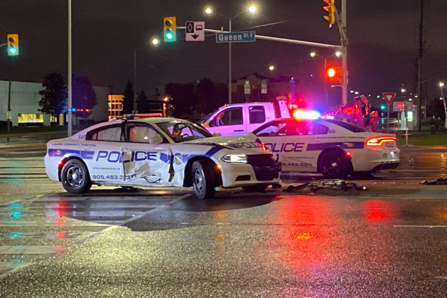

Features
Alert the public of oncoming emergency vehicles
A large percentage of surveyed drivers feel confused about what to do when they hear an emergency vehicle approaching. Using VERTA, drivers are given more time to make room. As soon as an emergency vehicle rolls Code 3, an alert will be sent to the public.

Real time fleet tracking & analysis
Coordination can be a huge issue and cause crashes. Through the administrative portal, all fleet vehicles can be tracked and properly deployed to where they can make the most difference.
F.A.Q.
What is the timeline for the beta?
We are currently still in development of the prototypes of the application. Regular updates will be provided to those that express interest in the program.
What size departments are we looking to have in the beta?
We are currently looking for small to medium sized police, fire, and paramedic departments to test the stability and functionality of VERTA.